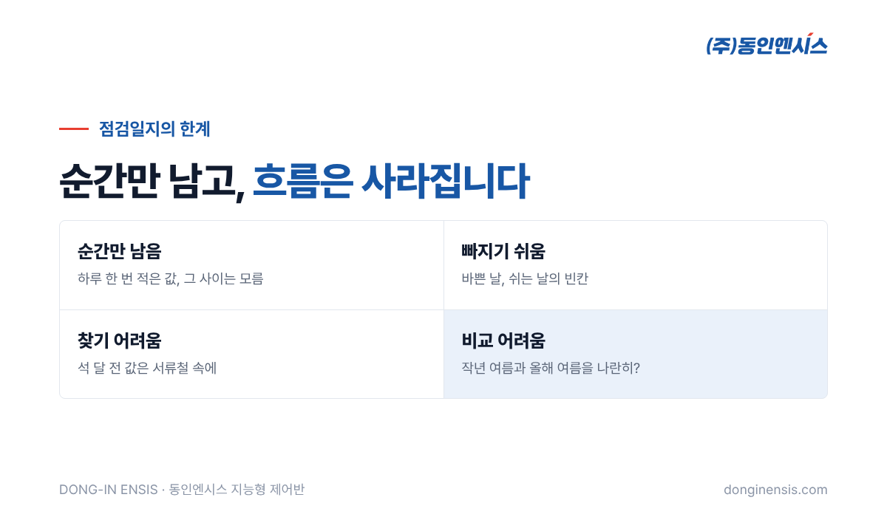
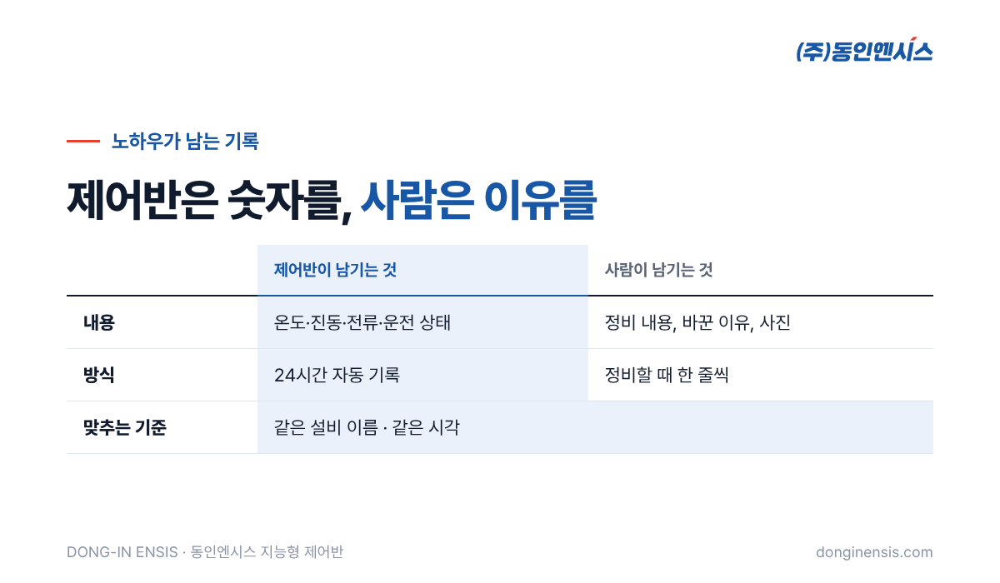

"그 펌프는 원래 소리가 좀 커요. 김 반장님이 괜찮다고 하셨어요." 공장에서 흔히 듣는 말입니다. 그런데 김 반장님이 정년을 맞아 떠나고 나면, 그 소리가 정말 괜찮은 소리인지 아는 사람이 아무도 남지 않습니다. 1991년부터 부산에서 산업 설비의 제어반을 설계·제작해 온 동인엔시스가, 숙련 작업자의 감각을 설비 점검 기록으로 남기는 방법을 이야기해 보려 합니다.
오래 일한 설비 담당자는 많은 것을 몸으로 압니다. 아침에 공장 문을 열고 들어서는 순간 평소와 다른 소리를 알아채고, 모터 표면을 손등으로 짚어 보고 오늘은 좀 뜨겁다고 말합니다. 이 감각은 수십 번의 고장과 수천 번의 점검이 쌓여 만들어진 것이라, 교육 몇 번으로 그대로 옮겨 주기 어렵습니다.
문제는 이 감각이 대부분 기록되지 않는다는 점입니다. 점검일지에는 '이상 없음' 한 줄이 남을 뿐, 그 판단의 근거가 된 '평소 모습'은 사람 머릿속에만 있습니다. 그래서 담당자가 바뀌면 새 담당자는 처음부터 다시 설비를 익혀야 하고, 그 사이에 생긴 이상은 놓치기 쉽습니다.
동인엔시스 백민기 대표에게 "이건 꼭 기록으로 남겨야겠다고 처음 느낀 순간"을 물은 적이 있습니다. 대표는 처음 만든 제어반을 시운전하던 날을 떠올렸습니다.
도면대로 배선했다고 생각했는데, 특정 조건에서만 설비가 멈추더라고요. 한참 확인하다 보니 현장에서 바꾼 접점 하나가 도면에 반영되지 않았던 거예요. 그때 "오늘은 내가 기억하니까 고치지만, 몇 달 뒤에 다른 사람이 보면 처음부터 다시 찾아야겠구나" 싶었어요.
그 뒤로 대표는 "잘 작동하는 것까지가 완성이 아니라, 다음 사람이 이해할 수 있게 남기는 것까지가 완성"이라고 생각하게 됐다고 합니다. 설비 점검 기록도 같습니다. 오늘 점검을 마친 사람이 아니라, 몇 달 뒤 처음 그 설비를 맡을 사람을 위해 남기는 것입니다.

대부분의 현장은 점검일지를 씁니다. 종이 양식이든 엑셀 파일이든, 정해진 항목을 정해진 주기로 적는 방식입니다. 이 방식은 분명 의미가 있지만, 몇 가지 한계가 있습니다.
결국 점검일지는 '점검을 했다'는 증거로는 쓰이지만, '설비가 어떻게 변해 왔는가'를 보여 주는 자료로 쓰이기는 어렵습니다. 숙련자의 감각이 바로 이 '변해 온 모습'에서 나온다는 점을 생각하면, 점검일지만으로 노하우를 넘겨주기 어려운 이유가 분명해집니다.
동인엔시스가 만드는 지능형 제어반은 하루 한 번 펜을 드는 대신, 밤낮없이 설비 곁에서 값을 받아 적는 점검자 역할을 합니다. 모터 권선온도와 베어링 온도, 진동, 회전속도, 전류와 전력량, 주변 온습도, 운전 상태까지 사람이 하루 한 번 적던 값을 끊김 없이 남깁니다.
이렇게 쌓인 기록은 숙련자의 감각을 숫자로 옮겨 놓은 것과 비슷한 역할을 합니다. "원래 소리가 좀 크다"는 말 대신 "이 펌프는 늘 진동이 이 정도였고, 지난달부터 조금씩 커지고 있다"는 사실이 남습니다. 새 담당자는 선배의 기억에 기대지 않고도 그 설비의 평소 모습을 화면에서 확인할 수 있습니다. 계절마다 어떻게 달라지는지, 생산이 몰리는 달에는 어떤 값이 오르는지도 지난 기록을 넘겨 보면 알 수 있습니다.
석 달 전 같은 설비의 값이 궁금하면 서류철 대신 화면에서 기간을 골라 보면 되고, 인수인계 자료가 필요하면 그 구간을 CSV 파일로 내려받아 붙이면 됩니다. 센서별 기준값을 넘으면 경고와 알람이 뜨므로, 새 담당자가 아직 감을 익히지 못한 시기에도 큰 변화는 놓치지 않게 됩니다.
Photorealistic photo of an older Korean maintenance technician with grey hair and a younger Korean colleague, both in navy work jackets, standing next to a blue industrial pump and looking together at a tablet showing abstract trend lines (no readable text), factory setting, warm natural light, documentary style, no brand logos, no readable text. 3:2 landscape.
제어반이 모든 것을 대신하지는 못합니다. 언제 베어링을 바꿨는지, 왜 그 설정값을 바꿨는지, 어떤 소리가 났을 때 무엇을 확인했는지는 사람이 남겨야 합니다. 대표가 말한 '수정한 이유와 배선 위치, 변경 전후 사진'이 바로 이런 기록입니다.
그래서 권하는 방식은 두 가지 기록을 같은 기준으로 맞추는 것입니다.
이렇게 하면 데이터는 '무슨 일이 있었는지'를, 사람의 기록은 '왜 그렇게 했는지'를 남기게 됩니다. 두 가지가 합쳐져야 비로소 다음 사람에게 넘겨줄 수 있는 노하우가 됩니다.

기록이 쌓인 현장의 인수인계는 이렇게 바뀝니다. 예전에는 선배가 설비를 하나씩 돌며 "이건 이렇고 저건 저렇다"고 말로 전했다면, 이제는 설비 화면을 함께 열어 지난 1년의 흐름을 보며 이야기합니다. 여름마다 온도가 오르는 설비, 경고가 자주 뜨는 설비, 정비 뒤에 진동이 확 줄었던 설비가 기록으로 보입니다.
떠나는 사람의 시간도, 남는 사람의 시간도 줄어듭니다. 말로 전하면 빠지기 쉬운 '그때 왜 그랬는지'도 정비 기록에 한 줄씩 남아 있으니, 새 담당자는 궁금할 때마다 다시 찾아볼 수 있습니다. 선배가 떠난 뒤에도 그 설비 점검 기록은 계속 남아 다음 사람을 돕습니다. 무엇보다 사람이 바뀌어도 설비를 보는 눈의 수준이 크게 떨어지지 않습니다.
Photorealistic photo of a factory office desk with an old paper inspection logbook and binder on one side and a laptop showing an abstract year-long trend chart on the other side (no readable text), two people's hands pointing at the screen, soft daylight, shallow depth of field, no brand logos, no readable text. 3:2 landscape.
Q. 설비 점검 기록을 자동으로 남기면 순회 점검은 안 해도 되나요? 아닙니다. 소리, 냄새, 누유처럼 사람이 확인해야 할 것은 여전히 있습니다. 다만 기록이 가리키는 설비부터 보게 되어 점검이 더 정확해집니다.
Q. 기록은 얼마나 오래 보관되나요? 데이터 보관 기간은 프로젝트별 계약으로 정합니다.
Q. 오래된 설비도 기록할 수 있나요? 설비는 그대로 두고 제어반만 교체하거나 새로 설치하는 방식이라, 오래된 모터 설비에도 적용할 수 있습니다. 오히려 오래 쓴 설비일수록 지금부터라도 기록을 남겨 두는 의미가 큽니다.
노하우는 사람의 것이지만, 그 노하우가 바탕으로 삼은 '평소 모습'은 기록으로 남길 수 있습니다. 제어반이 숫자를 남기고, 사람이 이유를 남기면, 숙련 작업자가 떠나도 설비를 보는 눈은 공장에 남습니다.
☎ 051-862-3668 · ✉ dongin@donginmne.com
아래 질문 중 하나에 실제 경험으로 답해 본문 적당한 곳에 넣어 주세요. 사람이 직접 쓴 문장이 들어가면 네이버에서 저품질 위험이 줄고 노출에 도움이 됩니다.